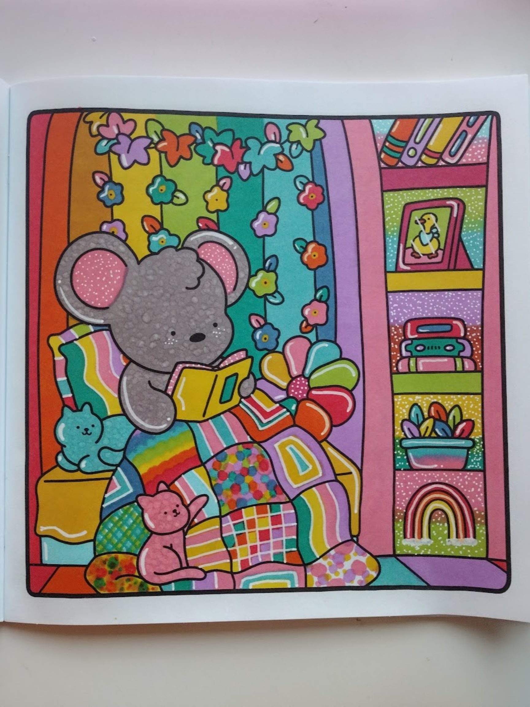
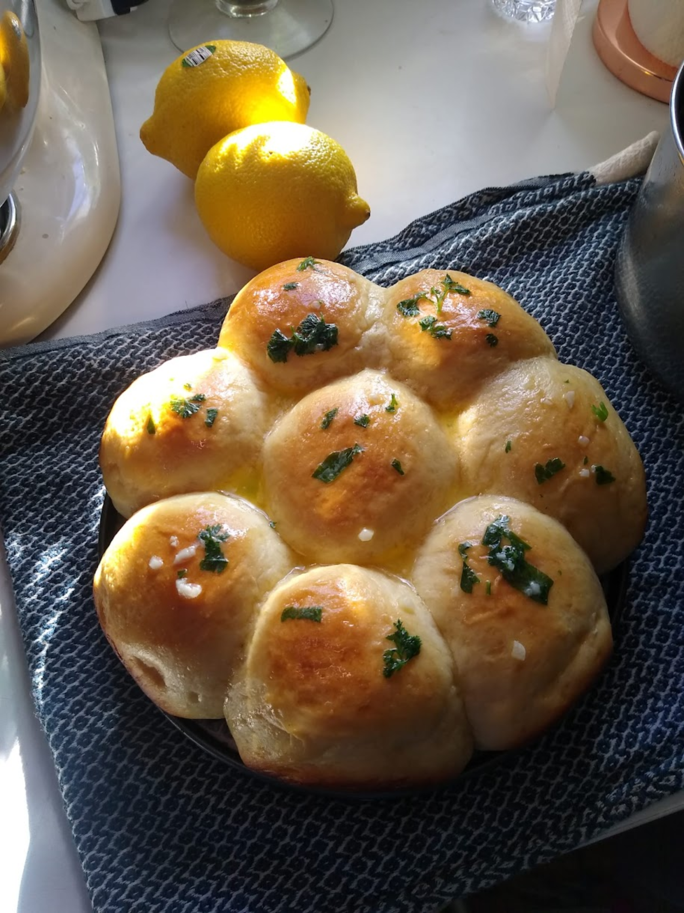

why UX + UI design.
i've always been drawn to the way people interact with things - how a design can make someone's experience feel effortless or confusing. UX and UI let me combine creativity with problem-solving, turning ideas into experiences that feel natural and enjoyable to use. i love the balance between logic and artistry. making something that's not just nice to look at, but actually makes someone's day a little easier.
design has always been part of my life.
from spending hours in The Sims building houses to redesigning my bedroom over and over again, design has always been part of who i am. it wasn't until right before college that i realized i could actually make a career out of it. i've always loved creating things that not only work but look and feel right - something that's both functional and beautiful.
you can usually find me..
-
with my cat.
-

coloring.
-
by the water.
-

baking.